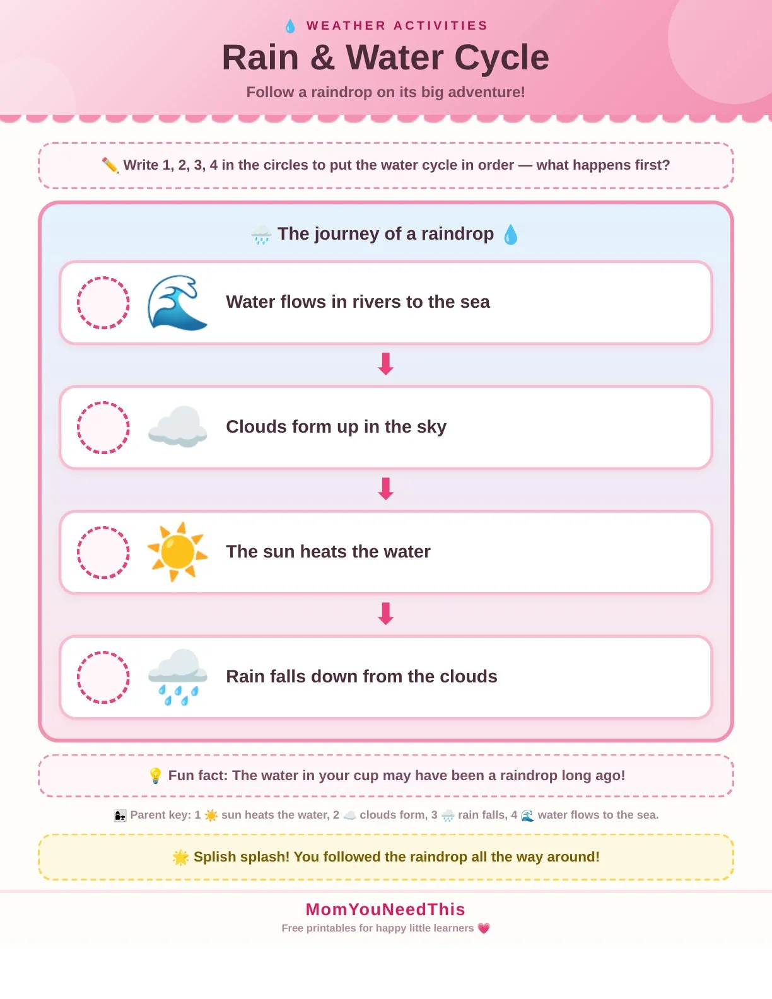

🌧️💧 Rain & Water Pitter-Patter, Splash & Play
Rain feeds our world and makes the best puddles. These joyful activities explore the water cycle, rain sounds and all the ways water moves around us.
Quick Answer
This free printable rain and water activity teaches toddlers and preschoolers (ages 2–5) the water cycle as a round trip: the sun warms puddles and seas and the water climbs invisibly into the sky, gathers into clouds, falls as rain, and collects — ready to climb again. Kids trace the water cycle, match rain gear to rainy days, and discover where rain comes from and where it goes. Download and print at home with no signup needed.
At a Glance
- Ages: Toddlers and preschoolers (ages 2–5)
- Activity: Tracing the water cycle; matching rain gear
- Skills: Water cycle science and sequencing
- Format: Printable worksheet (PDF)
- Cost: Free, no signup
Rain raises the two best questions in early science: where does it come from, and where does it go when it stops? The answers form a circle — the only shape in nature that never ends — and the water in this morning's puddle genuinely includes water the dinosaurs drank. Children find that fact irresistible, and it happens to be true.
🌧️💧 Explore Rain & Water
Trace the water cycle, match rain gear, and discover where rain comes from and where it goes.
💡 How To Use This Activity
Print these pages on a rainy day if the weather cooperates: listen to the rain first, then work through the water-cycle pictures while it falls outside. If the sky is dry, a spray bottle over a plant makes a perfectly respectable rainstorm. The print button opens the full-size page in a new tab if you prefer to print from there.

🖨️ Download Your Free Rain & Water Printable
Trace the water cycle, match rain gear, and discover where rain comes from and where it goes. Print it out, grab the crayons, and you're ready — no signup needed.
⬇️ Download Free Printable 🖨️ Print🎁 Free printable for toddlers & preschoolers
💧 Rain’s Round Trip — The Water Cycle For Kids
Step 1 — The climb (evaporation). The sun warms water in puddles, lakes and seas, and some of it turns into an invisible gas and rises. You can watch a small version after any rain: the puddle that shrinks all afternoon is climbing into the sky. The water does not disappear; it moves.
Step 2 — The gathering (condensation). High up, the air is cold, and the invisible water gas turns back into droplets so tiny they float — a cloud is born. The same thing happens on a bathroom mirror during a shower: warm wet air meets cold glass and fogs it. That fog is a homemade cloud.
Step 3 — The fall (precipitation). When droplets join and grow too heavy to float, they fall: rain in warm weather, snow when the air is cold enough. Rain is not the cloud running out; it is the cloud's water becoming too heavy for the sky to hold.
Step 4 — The collecting. Rain gathers in puddles, streams, rivers, soil and seas — and the sun is already warming it for the next climb. The cycle has no start and no finish, which is why Earth's water is never used up: it just keeps traveling, and every drop has been traveling for billions of years.
❓ Rain & Water FAQs
What activities are included in Rain & Water?
This page collects our free rain and water printables in one place: tracing the water cycle's round trip (climb, gather, fall, collect), matching rain gear, and discovering where rain comes from and where it goes. Download the printable below and start learning right away.
Are these activities really free?
Yes — every printable on MomYouNeedThis is 100% free to download and print. No signup, no payment, just tap the download button. A rainy day is this set's natural habitat, but a spray bottle over a plant makes a respectable substitute storm. A rainy day is this set's natural habitat, but a spray bottle over a plant makes a respectable substitute storm.
How do I use these activities with my child?
Print these pages on a rainy day if the weather cooperates: listen to the rain first, then work through the water-cycle pictures while it falls outside. Mark a puddle's edge with chalk afterward and check it hourly — watching it shrink is watching evaporation, step one of the cycle, with your own eyes.